

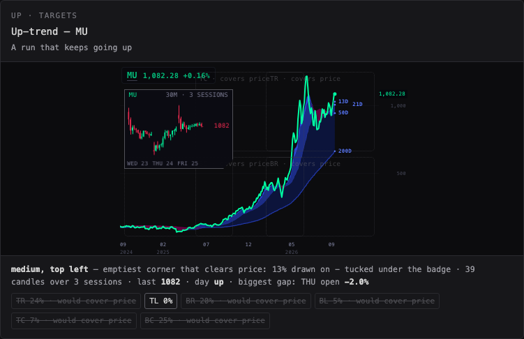
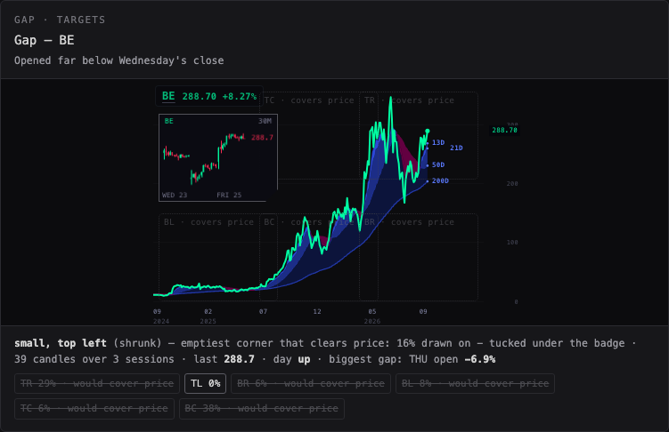
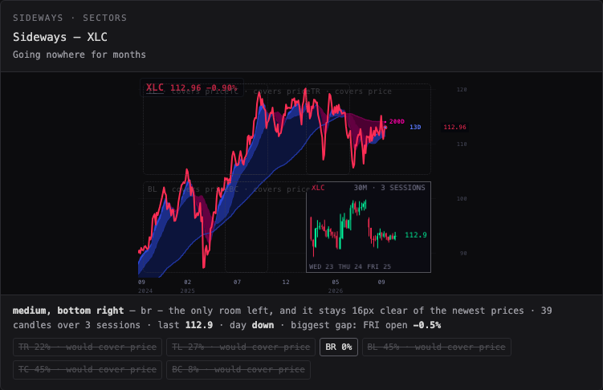
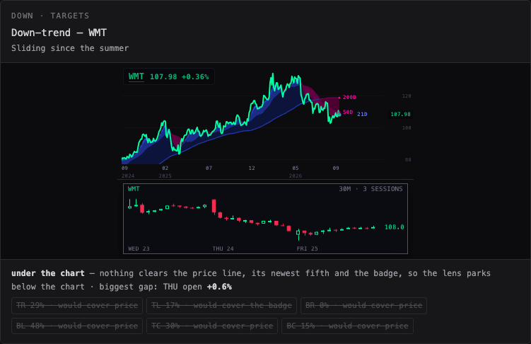
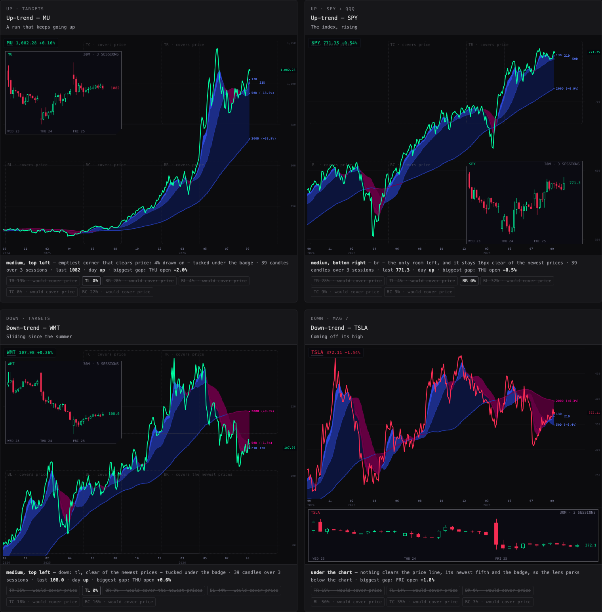
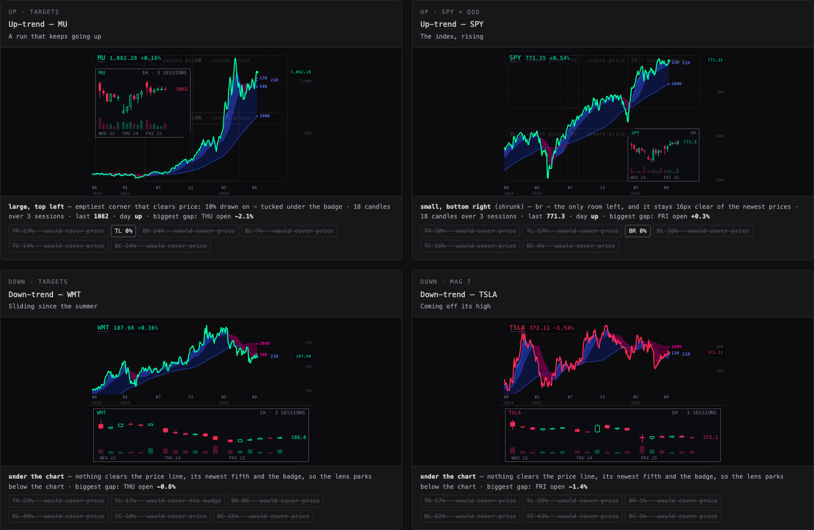
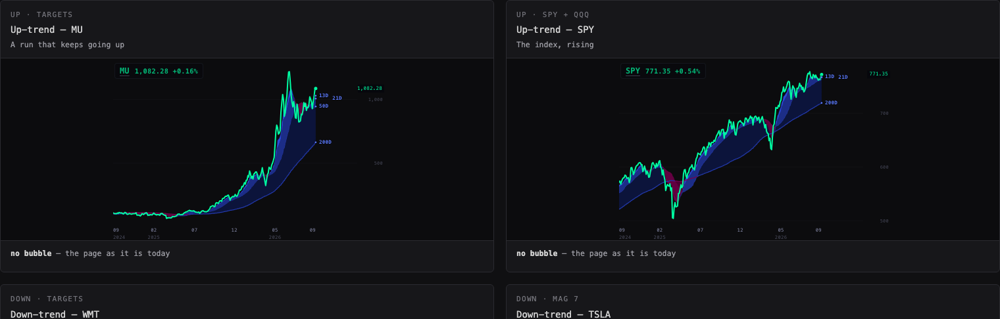

Every big chart below is drawn by the Station's own chart code, with the Station's own clouds, on real 3-day prices from the chart API — the same picture as the TARGETS, SECTORS, SPY + QQQ and MAG 7 pages. The small box in a corner is the new thing: the same name's last few sessions as candles, so a glance at the 3-day line also shows what this week looks like up close. No tape. Nothing on the live Station: this is a workshop page on its own URL.
The big chart is the 3-day line page as it is on the wall. The bubble is the bar chart at zoom: the last three sessions, half-hour candles, each candle green when it closed above its open and red when below, a tiny time axis naming each session, and the last price tagged at its own height. The bubble goes where the 23 September rule puts it: never on the price line, eight pixels clear of it, in the emptiest corner that is left, never on the newest fifth of the line; rising lines get it low, falling lines high. If no corner is free it shrinks, and if it still does not fit it parks under the chart.
Eight real cases: two up-trends, two down-trends, two sideways ranges, and two gaps at the open. Each is named on its card with the Station page it comes from. Each pane is drawn at the size it really has on the wall — 419 × 277 pixels, the 8-up that TARGETS, SECTORS, MAG 7 and the AI pages use at 1680 wide, measured on the deck itself; the pane-size dial switches to the 6-up, the 2-up (SPY + QQQ) and the phone. The pane's own badge (ticker, price, change) is painted too, from the newest completed daily close, because on the wall it is the most-read thing in the corner and the bubble must not sit on it: where the badge's corner is the only empty one, the bubble tucks in under the badge. The corners the rule did not take are drawn faded, with the share of each already painted on, so you can see why one corner won. The faded boxes are a workshop aid; in the Station they would be off.
| Dial | Recommended | Why |
|---|---|---|
| Pane size | Station 8-up · 419 × 277 (a workshop dial, not a Station setting) | Measured on the deck at 1680 wide: eight-ticker 3-day pages draw 419 × 277 panes, SPY + QQQ 840 × 554, a phone stacks one 390 × 473 pane. The page opens at the 8-up because that is where seven of the nine 3-day pages live. |
| Bubble size | Medium — 42% of the plot's width, 46% of its height | On an 8-up pane that is about 155 × 106 pixels: three sessions of half-hour candles at just under four pixels a candle, readable as shape and colour, the last price and the session names legible. Large only fits quiet charts; Small makes the candles one pixel wide. On the 2-up the box is capped at 340 × 210. |
| When no corner fits | Leave the bubble off (on the wall) | At the 8-up size three of the eight cases here (WMT, TSLA, XLY — lines through the middle with the newest prices on the right) leave no corner that clears the price, its newest fifth and the badge. A strip under the pane costs the line a third of its height on a page whose point is the line. Those panes simply have no bubble; the page still shows the strip when the dial is turned so Alan can judge it. |
| Timeframe | 30 minutes | 13 candles a session: the open, the lunch drift and the close each get their own bars. 15 minutes doubles that and the bodies vanish at this size; 1 hour gives seven a session and reads as blocks, better on a phone. |
| Sessions shown | 3 | Today and the two before it — enough to see a gap, a reversal or a grind, without the candles going under three pixels. Five works at Large on a 2-up pane; one is the intraday page's job, not the bubble's. |
| Hours | Regular session | Extended hours add 19 thin, quiet bars a session that flatten the picture. The gap at the open is still visible between regular sessions — the gap cases below show it. |
| Corner rule | Auto — follow the trend | The 23 September rule as approved: rising low, falling high, emptiest corner, never on price, never on the newest fifth. |
| Opacity | 0.96 | Slightly short of solid, so the bubble reads as part of the chart rather than a sticker on it. |
| Volume | Hidden | A volume strip takes a fifth of the bubble's height from the candles, and at this size it is texture, not information. It is drawn in each bar's own colour at quarter strength — never grey — for when Alan wants it on a 2-up page. |
| Candle colour | Each bar by its own close against its open | That is what a bar chart is. The bubble's name in its head still carries the day's colour — green if the newest daily close is at or above the one before, red if below — so the wall's one rule is on the bubble too. "The day" mode colours every candle the same, which loses the reversals the bubble exists to show. |
| Busiest corner allowed | 55% painted on | Carried from round 2, where it kept a corner on five of six cases. |
| Clear of price | 8 pixels | Carried from round 2 and from v4. |
| Re-read the bars | Every 10 minutes while the page is on the wall | A completed half-hour bar cannot change, so the only new information in ten minutes is the newest bars. The Station rotates pages every 33 seconds, so most bubbles are read once at mount and never refreshed. |
Measured 26 September, 22:05–22:15 UTC, in a headless browser on this MacBook: a six-pane 3-day stage built from
this page's own code at 1680 wide, with and without the bubble, alternating, four runs, then one run of the real deck's SECTORS page
as it is today for scale. I summed the CPU time of every browser process, including the pages, over 45 seconds of loading and then
one steady minute — the RSI-fan lane's method. The stage re-read its bars once a minute during the steady minute, six times the
recommended rate, so the steady number is an upper bound. The numbers are in cpu-runs.json beside this page.
| Stage | Run | Loading (CPU seconds) | Steady (CPU seconds per minute) | Chart API reads |
|---|---|---|---|---|
| six 3-day panes · no bubble | 1 | 0.40 | 0.02 | 12 |
| six 3-day panes · WITH bubbles | 2 | 0.40 | 0.19 | 24 |
| six 3-day panes · no bubble | 3 | 0.36 | 0.02 | 12 |
| six 3-day panes · WITH bubbles | 4 | 0.46 | 0.21 | 24 |
| the real deck · SECTORS, 8 panes · as it is today, for scale | 5 | 1.32 | 1.54 | 92 |
Result: with the bubble, loading cost +0.05 CPU seconds once (0.38 → 0.43) and the steady minute +0.18 CPU seconds per minute (0.02 → 0.20) — with the bars re-read every minute. The run-to-run spread was 0.02, so that steady difference is real, and almost all of it is the six re-reads and redraws a minute: at the recommended ten-minute refresh it is about +0.02 per minute. Chart-API reads: 12 without (six 3-day, six daily for the clouds), 24 with (six intraday at mount, six more in the test's steady minute). Against the real deck page at 1.54 CPU seconds a minute, and the +2 per minute ceiling the RSI-fan lane worked to, the bubble is small.
Requests per lap. A build would add one intraday read per 3-day pane when the page mounts — the same request the intraday
pages already make (/candles?symbol=…&tf=30&limit=128). The day lap has nine 3-day pages; with SPY + QQQ at
two panes and the rest at eight, that is 66 (9 pages, 66 panes) extra reads per day lap and
66 per night lap, on top of the 132 3-day and daily-cloud reads those panes already make — the
same 66 panes read twice today would read three times. A test holds this count to the deck's own page list. At 33 seconds a
page a day lap is about 13 minutes, so the 10-minute refresh fires at most once per pane per lap and only for a page that stays on
the wall — the rotation means it almost never fires.
Build it: Medium, 30-minute candles, the last three regular sessions, no volume, each candle in its own colour, placed by the 23 September rule with the badge as a keep-out — inset or nothing, never a strip under the pane. Only on the nine 3-day pages, with the faded candidate boxes off. What that gives on the wall, from the eight cases here at the real 8-up size: five panes carry the bubble (MU, SPY, XLC, BE, NBIS) and three do not (WMT, TSLA, XLY), because on those the line and the badge leave no corner; at the 2-up size seven of eight carry it; on the phone six of eight. The cost is one small request per pane at mount, 66 a lap, and about +0.02 CPU seconds a minute at the ten-minute refresh. The one thing to decide is whether "some panes have it and some don't" is acceptable on a page — the alternative, a strip under the line on every pane that has no corner, is drawn here on the dial and is the heavier wall.
chart/index.html (which is station-shells/chart-v1/index.html, byte for byte):
?bubble=30m:3 (timeframe and sessions; absent means no bubble). Read next to ?rsi=,
stored nowhere, so a pane opened on its own is unchanged.fetchProviderCandles(t, "30", 128) — the same function, the same provider, the same limit rule (never above 240).
The rows are kept on the host as host._bubbleBars with their open, high, low, close and volume; nothing derives a
bar from a quote, and nothing is written to the chart cache in a shape the line does not already use.scChartDraw, when the host carries bars: call placeBubble with host._plot,
host._series and an ink reader on the pane's own canvas, then drawBubble on a second canvas laid over
.sc-nchart__area (so the line's canvas is untouched and hover on the line still works). Both functions come from
lens-bars.mjs, imported as a module script beside station-clouds.js; the placement is the existing
lens-placement.mjs, moved from deliverables/ to _indicators/ with its tests' import paths
updated and its sha pinned as the lens-workshop test already does.CLOUD_REFRESH_MS. Pan, zoom and hover redraw from the stored bars and make no request..sc-nchart__live.getBoundingClientRect() in pane pixels, goes to placeBubble as
the keep-out, and a shelf answer means no bubble on that pane (the workshop's strip is not built). A pane that lost its
bars — a named absence or a failed read — draws the line as today and says nothing about a bubble.deck/scenes.js:
bubble:"30m:3", on the nine 3-day workflow pages (targets3D, sectors3D,
mainIndexes3D, mag7, ai1, ai2, ai3, other3D,
blueChip3D) and on macroCrossAsset only if Alan wants it there — its symbols are not all provider-owned
intraday.workflowPageState returns it per slot as bubbles:tickers.map(() => page.bubble || ""), the way
stacks carries the RSI study, and paneChartSrc in deck/index.html appends
&bubble=… to the frame URL the same way studyQuery appends &rsi=. No other page gains
the parameter, and the dock's range button does not carry it, so a 3-day page switched to 1D by hand loses the bubble, which is right.tests/station-scenes.test.mjs that only the 3-day pages carry a bubble, and that the frame URL for a
1D page never does.Not part of the build: no change to the pane's line, colours, clouds, badge or hover; no localStorage key; no new provider route; no tape.
/candles?symbol=…&tf=3D&authority=provider&limit=240 — the
exact request the Station's 3-day pages make, provider-built, split-adjusted, completed bars only. Newest 3-day bar: the one
that began 24 September._indicators/station-clouds.js, from 930 daily closes
(tf=D&limit=930), the same warm-up a 3-day page asks for.tf=30&limit=240 (and 15 and 60 for the timeframe dial). The provider's bars run
04:00 to 19:30 New York; the regular-hours dial keeps the 13 that start between 09:30 and 15:30. Newest half-hour bar: 25
September 19:30 ET for the shares, 16:00 ET for the sector funds.cases/ with its URL and fetch time (26 September 2026, about
21:45 UTC), so the page draws the same picture every time it is opened, from anywhere the Station is served.
screens/gallery-1680.jpg.






